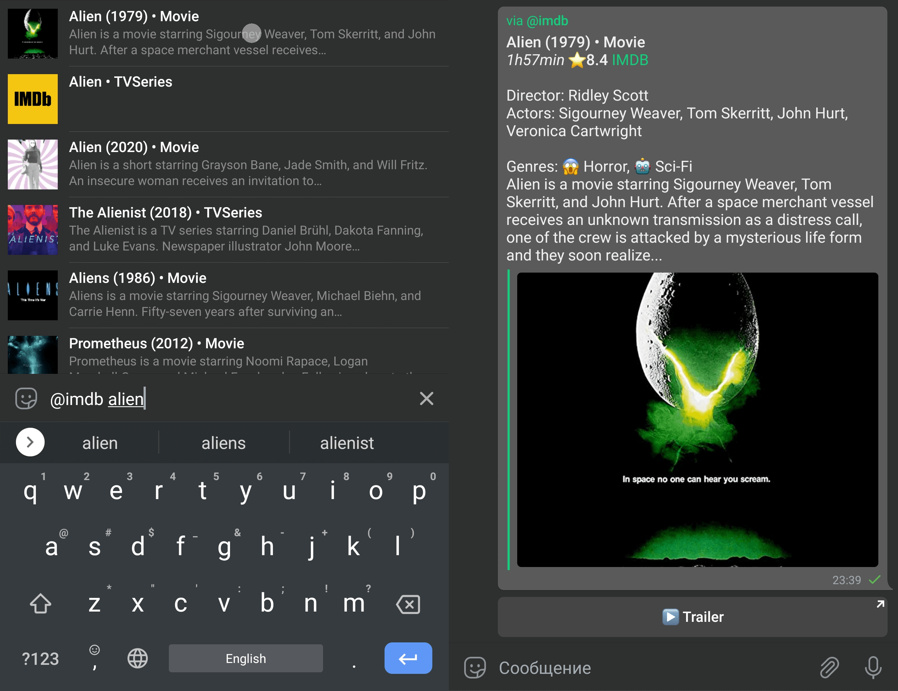
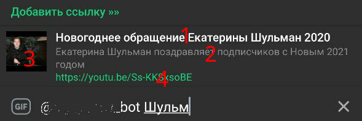

Инлайн-режим¶
Введение¶
В предыдущих главах бот и человек общались каждый сам за себя, однако в Telegram существует специальный режим, позволяющий пользователю отправить информацию от своего имени, но с помощью бота. Это называется инлайн-режим (Inline mode). Как это выглядит в реальной жизни:

Как видно на скриншоте выше, итоговое сообщение отправлено от имени пользователя, но предварительный список был предоставлен ботом @imdb. Подробное описание инлайн-режима с точки зрения пользователя можно найти на официальном сайте, а в этой главе мы напишем собственного простого инлайн-бота для упрощения поиска и отправки ссылок на любимые YouTube-видео.
Формат инлайн-запросов и ответов¶
Когда пользователь вызывает бота в инлайн-режиме, введя его юзернейм в поле ввода, бот получает апдейт с типом
InlineQuery, из которого нам важно поле from (from_user в aiogram),
содержащее тип User с информацией о юзере, вызвавшем бота, а также поле
query, т.е. текст запроса (может быть пустым). К сожалению, в настоящий момент нет возможности узнать, в каком чате
был вызван инлайн-бот, вероятно, это сделано специально для повышения приватности пользователей, т.к. бота необязательно
добавлять в группу или канал, чтобы использовать его в инлайн-режиме.
Для ответа на запрос необходимо вызвать метод answerInlineQuery,
куда следует передать массив объектов-результатов, и дополнительно различные флаги, о которых поговорим чуть позже. Типов
объектов-результатов аж целых двадцать, однако многие из них являются
вариациями друг друга. Так, например, InlineQueryResultPhoto
содержит ссылку (URL) на изображение, а
InlineQueryResultCachedPhoto — file_id уже загруженного
в Telegram изображения. Более того, рекомендуется использовать объекты одного типа в инлайн-ответе, поскольку клиентские
приложения некорректно отображают (или не отображают вовсе) смешанный контент.
Обратите внимание: в инлайн-режиме нельзя загружать новые медиафайлы в Telegram, только использовать уже имеющиеся в облаке, либо указывать URL из Интернета.
Одним из наиболее часто используемых типов объектов-результатов является InlineQueryResultArticle — просто текст. Рассмотрим основные элементы такого объекта внимательнее:

Цифрами на рисунке выше обозначены: 1 — заголовок объекта; 2 — описание; 3 — предпросмотр; 4 — ссылка, по которой перейдёт пользователь если нажмёт на (3). Всё, кроме (1) необязательно, но позволяет визуально разнообразить выдаваемые результаты. Но что отправится в чат, если нажать не на предпросмотр, а на то, что справа от него? Для этого существует тип InputMessageContent, представленный четырьмя подтипами: Текст, Геолокация, Достопримечательность (Venue) и Контакт. В самом простом случае, пользователь видит такой список ссылок, нажимает на один из элементов и получает текст, указанный в InputTextMessageContent.
Сложно? Но и это ещё не всё! InputMessageContent можно использовать и с другими типами инлайн-объектов, например, выдавать пользователю в ответ стикеры, а при нажатии отправлять ссылку на весь стикерпак. Или описание фильма при нажатии на обложку в инлайн-режиме. Экспериментируйте!
Пишем бота¶
От теории — к практике. Опишем суть будущего бота: пользователь в диалоге с ботом добавляет (или обновляет) ссылку на видео с YouTube и указывает собственное описание. Далее в любом другом чате он вызывает бота в инлайн-режиме, выбирает в списке одно из сохранённых ранее видео и отправляет его. Дополнительно можно ввести текст, по наличию которого результаты будут отфильтрованы. Разумеется, у каждого юзера должен быть свой собственный набор сохранённых ссылок.
Предупреждение об используемых технологиях
Поскольку главная цель этой главы — рассказать об инлайн-режиме, то сопуствующие детали, такие как реализация работы с базой данных и хранилищем FSM, будут сознательно упрощены и/или не упомянуты в тексте. Так, например, в качестве FSM будет использован MemoryStorage, а в роли СУБД подойдёт и SQLite. В реальности рекомендуется использовать персистентное хранилище FSM (напр. Redis) и более продвинутую СУБД (напр. PostgreSQL), а также отдельный поисковый движок (ElasticSearch, Sonic...).
Хранение данных¶
Исходя из приведённого выше «техзадания», сделаем вывод, что каждое сохранённое видео можно описать тремя обязательными сущностями: Telegram ID пользователя, идентификатор YouTube-видео (извлекается из URL) и пользовательское описание. Первые два элемента образуют первичный ключ, что даёт ограничение уникальности для каждой пары «Telegram_ID + YouTube_ID». Описание таблицы в БД выглядит следующим образом:
CREATE TABLE IF NOT EXISTS "youtube" (
"user_id" INTEGER NOT NULL,
"youtube_hash" TEXT NOT NULL,
"description" TEXT NOT NULL,
PRIMARY KEY("user_id","youtube_hash")
);
Ранее мы договорились, что не будем особо рассматривать работу с БД, и сконцетрируемся на особенностях инлайн-режима,
однако две функции всё же стоит рассмотреть для дальнейшего понимания. Первая — добавление ссылки с описанием в базу
данных. Здесь можно применить один трюк, называемый "UPSERT", т.е. Insert or Update. Дело в том, что, сформировав
SQL-запрос специальным образом, можно при вставке данных (Insert) в случае нарушения уникальности не выбрасывать ошибку,
а неявно обновлять затронутую строку (Update). Посмотрите на следующий кусок кода. В нём мы пытаемся
добавить новую строку в базу данных, однако если указанная пара «Telegram_ID + YouTube_ID»
уже существует, то вместо вставки обновляется описание (description):
def insert_or_update(user_id: int, youtube_hash: str, description: str):
statement = "INSERT INTO youtube (user_id, youtube_hash, description) " \
"VALUES (:user_id, :youtube_hash, :description) " \
"ON CONFLICT(user_id, youtube_hash) " \
"DO UPDATE SET description = :description"
cursor.execute(statement, {
"user_id": user_id,
"youtube_hash": youtube_hash,
"description": description
})
cursor.connection.commit()
Вторая важная функция — получение списка ссылок. Поскольку пользователь может захотеть отфильтровать выдачу,
появляется второй необязательный аргумент search_query. При его наличии в конец SQL-запроса будет добавлен
поиск подстроки с ключевым словом LIKE. Вспомним, что в реальных условиях такой подход вряд ли сгодится из-за низкой
эффективности и точности поиска, но для демонстрации будет достаточно:
def get_links(user_id: int, search_query: str = None):
statement = "SELECT youtube_hash, description from youtube WHERE user_id = ?"
if search_query:
statement += f" AND description LIKE ?"
result = cursor.execute(statement, (user_id, f"%{search_query}%"))
else:
result = cursor.execute(statement, (user_id,))
return result.fetchall()
Switch-кнопки¶
Просмотр и удаление ссылок в личке с ботом делается элементарно, а добавление организуется с помощью простейшего конечного автомата (подробнее о механизме FSM можно узнать в предыдущей главе). Здесь стоит обратить внимание на последний шаг, когда идёт непосредственно добавление записи и подтверждение юзеру:
async def description_added(message: types.Message, state: FSMContext):
# Получение информации из FSM
user_data = await state.get_data()
# Вставка данных в БД
dbworker.insert_or_update(message.from_user.id, user_data["yt_hash"], message.text)
# Создание клавиатуры со switch-кнопками и отправка сообщения
switch_keyboard = types.InlineKeyboardMarkup()
switch_keyboard.add(types.InlineKeyboardButton(
text="Попробовать",
switch_inline_query=""))
switch_keyboard.add(types.InlineKeyboardButton(
text="Попробовать здесь",
switch_inline_query_current_chat=""))
await message.answer(
"Ссылка и описание успешно добавлены в инлайн-режим и "
"станут доступны в течение пары минут!\n"
"Полный список сохранённых ссылок: /links",
reply_markup=switch_keyboard)
await state.finish()
Ранее в главе про кнопки мы познакомились с двумя типами инлайн-кнопок: URL и Callback. Для инлайн-режима
полезен третий тип: Switch. В коде выше объявлены две кнопки, одна с пустым параметром switch_inline_query, другая — с
пустым switch_inline_query_current_chat. Первая предлагает выбрать чат, а затем подставляет в поле ввода юзернейм бота
для активации инлайн-режима, вторая делает то же самое, но в текущем чате (в нашем случае — в личке с ботом). Если
параметры сделать непустыми и указать какой-либо текст, то он будет добавлен к юзернейму бота, например:
switch_inline_query="text" -> @bot text в поле ввода в другом чате. Так, например, работает бот @like,
позволяющий сразу отправить свежесозданный пост куда-нибудь.
Обработка инлайн-запроса¶
Перейдём непосредственно к обработке запроса от юзера к боту в инлайн-режиме. В некоторых случаях удобно делать отдельный
хэндлер на пустой запрос (когда длина текста в поле query объекта
InlineQuery равно нулю) и показывать какой-нибудь «общий» ответ или
приглашение перейти к боту, однако в нашем случае любой, даже пустой запрос, требует обращения к БД, поэтому объединим
оба случая в одном хэндлере. Рассмотрим первый вариант: у пользователя нет сохранённых ссылок или он ввёл запрос,
по которому ничего не нашлось. Смотрим код:
async def inline_handler(query: types.InlineQuery):
# Получение ссылок пользователя с опциональной фильтрацией (None, если текста нет)
user_links = dbworker.get_links(query.from_user.id, query.query or None)
if len(user_links) == 0:
# Выбор текста для подписи над результатами
switch_text = "У вас нет сохранённых ссылок. Добавить »»" \
if len(query.query) == 0 \
else "Не найдено ссылок по данному запросу. Добавить »»"
return await query.answer(
[], cache_time=60, is_personal=True,
switch_pm_parameter="add", switch_pm_text=switch_text)
Остановимся подробнее на этом отрывке кода. На изображении выше, где рассматривали объект InlineQueryResultArticle, сверху
можно было заметить строку "Добавить ссылку »»", это т.н. «swtich-объект», позволяющий перейти непосредственно в личку
с ботом, передав сразу команду /start с дополнительным параметром, в нашем случае это add, т.е. бот получит
сообщение с текстом /start add и сможет соответствующим образом отреагировать. А в самом низу кода мы вызываем метод
answerInlineQuery, с пустым массивом объектов-результатов, описанием switch-объекта, а также ещё двумя параметрами:
cache_time и is_personal. Первый отвечает за время кэширования результатов на серверах Telegram (в секундах)
и по умолчанию имеет значение 300 (5 минут). Это значит, что если пользователь в течение указанного периода вызовет
инлайн-бота с одним и тем же запросом (или даже пустым), то Telegram не будет перенаправлять его боту, а сразу ответит
значением из кэша. Второй параметр, is_personal, делает кэширование уникальным для каждого пользователя, персонифицируя
результаты.
Автор этих строк однажды забыл указать флаг is_personal в его боте @my_id_bot,
выставил кэш на 86400 секунд (1 сутки) и выслушал много возмущений от пользователей, отправлявших его ID вместо их
собственных. Учитесь на чужих ошибках, не на своих.
Теперь рассмотрим второй случай: по запросу пользователя нашлись какие-то ссылки. Сформируем массив объектов-результатов типа InlineQueryResultArticle:
user_links = dbworker.get_links(query.from_user.id, query.query or None)
# В случае успеха переменная выше содержит массив результатов, каждый
# из который сам является массивом и содержит YouTube-хэш и описание
articles = [types.InlineQueryResultArticle(
id=item[0],
title=item[1],
# В общем случае, описание (description) может быть произвольным
description=f"https://youtu.be/{item[0]}",
url=f"https://youtu.be/{item[0]}",
hide_url=False,
thumb_url=f"https://img.youtube.com/vi/{item[0]}/1.jpg",
input_message_content=types.InputTextMessageContent(
message_text=f"<b>{quote_html(item[1])}</b>\nhttps://youtu.be/{item[0]}",
parse_mode="HTML"
)
) for item in user_links]
По некоторым полям мы прошлись выше, рассмотрим остальные: id — уникальный идентификатор объекта-результата,
причём эта уникальность должна быть для всей пачки ответов, включая дополнительно подгруженные (об этом ниже), в нашем
случае очень удобно использовать хэш YouTube-видео, hide_url — флаг, определяющий видимость ссылки (url)
в выдаче, thumb_url — ссылка на изображение для предпросмотра, если не указано, то Telegram покажет заглушку, дополнительно
можно указать высоту (thumb_height) и ширину (thumb_width) превью. А вот за содержимое конечного сообщения отвечает
аргумент input_message_content, которому назначен объект InputTextMessageContent. Обратите внимание на обрамление
описания в вызов quote_html() для экранирования возможных нехороших символов, ломающих разметку.
Итого полный текст инлайн-обработчика будет выглядеть следующим образом:
async def inline_handler(query: types.InlineQuery):
user_links = dbworker.get_links(query.from_user.id, query.query or None)
if len(user_links) == 0:
switch_text = "У вас нет сохранённых ссылок. Добавить »»" \
if len(query.query) == 0 \
else "Не найдено ссылок по данному запросу. Добавить »»"
return await query.answer(
[], cache_time=60, is_personal=True,
switch_pm_parameter="add", switch_pm_text=switch_text)
articles = [types.InlineQueryResultArticle(
id=item[0],
title=item[1],
description=f"https://youtu.be/{item[0]}",
url=f"https://youtu.be/{item[0]}",
hide_url=False,
thumb_url=f"https://img.youtube.com/vi/{item[0]}/1.jpg",
input_message_content=types.InputTextMessageContent(
message_text=f"<b>{quote_html(item[1])}</b>\nhttps://youtu.be/{item[0]}",
parse_mode="HTML"
)
) for item in user_links]
await query.answer(articles, cache_time=60, is_personal=True,
switch_pm_text="Добавить ссылку »»", switch_pm_parameter="add")
А вы знали, что, имея YouTube-хэш, можно легко получить различные превью к видео? Если нет, то добро пожаловать в этот чудесный пост на StackOverflow.
Switch туда и обратно¶
Как мы уже выяснили чуть выше, switch_pm_parameter подставляется как start-параметр с переходом в личку с ботом
(на языке Bot API это называется Deep Linking). А у нашего бота
на команду /add навешан трёхэтапный процесс добавления ссылки (в этом тексте не рассматривается, см. исходники к главе).
Пускай тот же процесс вызывается ещё и по Deep-линку /start add, для этого зарегистрируем первый этап добавления ссылки
по двум разным триггерам:
dp.register_message_handler(cmd_add_link, commands="add", state="*")
dp.register_message_handler(cmd_add_link, CommandStart(deep_link="add"), state="*")
А как вы помните, на последнем этапе добавления пользователю отправляются две switch-кнопки. И здесь кроется
одна любопытная фича Telegram: если юзер перешёл в личку с ботом по switch_pm-параметру, а затем получит сообщение
со switch_inline_query-кнопкой, то он автоматически вернётся обратно, минуя выбор чата, как при обычном нажатии. Причём
это работает даже если сообщение с кнопкой отправлено не сразу, а как в нашем примере, через пару шагов по FSM.
На этом с ботом всё, исходные тексты к главе смотрите в репозитории, доступным по нажатию на кнопку в правом верхнем углу. Но прежде, чем закончить с инлайн-режимом, надо рассмотреть ещё пару интересных особенностей...
Дополнительные материалы¶
Подгрузка результатов¶
Согласно документации Bot API, в одном вызове answerInlineQuery
можно отправить не более 50 элементов. Но что если нужно больше? На этот случай пригодится параметр next_offset. Его
указывает сам бот, и это же значение прийдёт в следующем инлайн-запросе, когда пользователь пролистает всю текущую пачку.
Для примера напишем простой генератор чисел, возвращающий пачки по 50 элементов, но с максимальным значением 195:
def get_fake_results(start_num: int, size: int = 50):
overall_items = 195
# Если результатов больше нет, отправляем пустой список
if start_num >= overall_items:
return []
# Отправка неполной пачки (последней)
elif start_num + size >= overall_items:
return list(range(start_num, overall_items+1))
else:
return list(range(start_num, start_num+size))
Теперь давайте перепишем наш инлайн-хэндлер таким образом, чтобы при приближении к концу текущего списка запрашивать
продолжение. Для этого в начале проверяем поле offset и ставим его равным единице, если оно пустое. Далее генерируем
фейковый список результатов. Если на выходе ровно 50 объектов, то в ответе указываем next_offset равный текущему
значению + 50. Если объектов меньше, то его делаем пустой строкой, чтобы Telegram больше не присылал запросы боту.
async def inline_handler(query: types.InlineQuery):
# Высчитываем offset как число
query_offset = int(query.offset) if query.offset else 1
results = [types.InlineQueryResultArticle(
id=str(item_num),
title=f"Объект №{item_num}",
input_message_content=types.InputTextMessageContent(
message_text=f"Объект №{item_num}"
)
) for item_num in get_fake_results(query_offset)]
if len(results) < 50:
# Результатов больше не будет, next_offset пустой
await query.answer(results, is_personal=True, next_offset="")
else:
# Ожидаем следующую пачку
await query.answer(results, is_personal=True, next_offset=str(query_offset+50))
По мере листания инлайн-результатов, бот будет получать запросы и возвращать всё новые и новые результаты, пока не дойдёт до 195-го элемента, дальше запросы прекратятся.
Сбор статистики¶
Мало кто знает, но Telegram позволяет собирать простенькую статистику по использованию бота в инлайн-режиме. Для начала
требуется включить соответствующую настройку у @BotFather: /mybots - (выбрать бота) - Bot Settings - Inline Feedback:

Числа на кнопках означают вероятность получения события ChosenInlineResult при выборе пользователем какого-либо объекта в инлайн-режиме. Так, например, если выставлено значение 10%, то при каждом выборе объекта существует вероятность в десять процентов получить событие ChosenInlineResult в боте. Выставлять значение 100% Telegram не рекомендует из-за удвоения нагрузки на бота. Таким образом, для сколько-нибудь серьёзной аналитики подобная фича не подходит, но в умелых руках и за большой период времени может дать общее представление о наиболее полезных инлайн-результатах. Пример хэндлера на подобные события:
@dp.chosen_inline_handler()
async def chosen_handler(chosen_result: types.ChosenInlineResult):
logging.info(f"Chosen query: {chosen_result.query}"
f"from user: {chosen_result.from_user.id}")